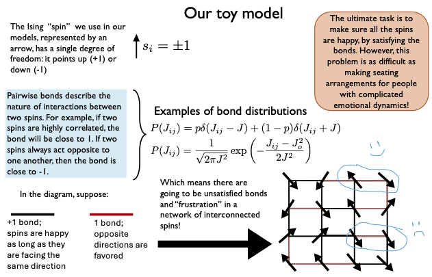
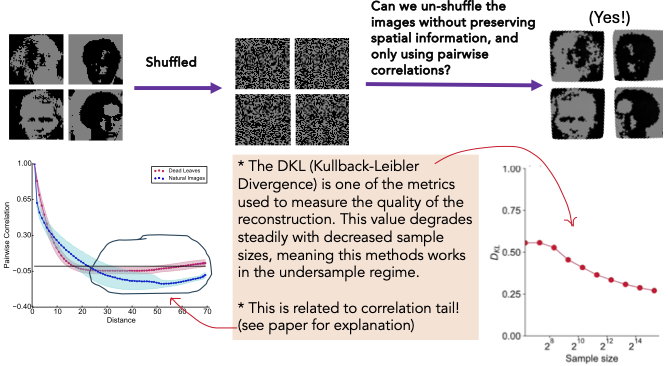
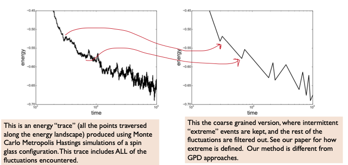
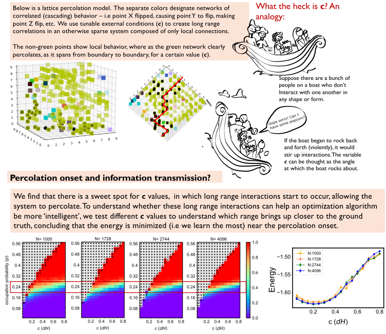

Background
Making sense of randomness
Peaks & dips in financial markets, timescales between perilous events, evolutions/extinctions in ecology, the coordination between neurons before they collectively fire, and even learning/training processes within AI model architectures, share a couple of underlying themes.
1) They are confusing. The lack mechanistic explainability and are challenging to model -- it isn’t obvious from their random fluctuations how to discern signal from noise. Broadly speaking, it’s safe to categorize these system as disordered, given the difficulty in mapping exact structural causes to their dynamics.
2) It’s presumably worth dealing with how confusing they are. Even though the individual fluctuations are random, there are macroscopic tendencies that can be defined probabilistically, which then leads to the question: what governs these tendencies in the first place? The benefit to figuring this out is that we might be able to predict, even control what is putatively random, or as the saying goes, “find order in disorder”. Note that we can only hope to better control the systems where the dynamics are driven (make learning algorithms converge faster). We cannot control whether natural events happen although we can prepare around them.
The energy landscape framework
I primarily used the energy landscape framework, which is a way to think about complex system in terms of all their possible states and their relative stability (related to potential energy).

Mapping all the possible states of a complex system and their corresponding potential energies may result in a rugged energy landscape with peaks (for its most unstable positions) and valleys (for it’s most stable positions). This framework can be extended to pretty much any system whose configuration spans a number of possibilities. Seminal examples include constraint satisfaction problems such as the traveling salesman, or the Levinthal paradox for protein folding where there are a number of solutions but one optimal solution that is incredibly difficult to compute. That is of course, unless we have a bird’s eye view of the landscape (which we do not!).
Studying stochastic processes is like studying motion along the surface of this landscape. If we move about the rugged landscape randomly and forgetfully, we would only encounter a solution by “luck”. It might take us anywhere between seconds or years to land where we want. To make an explicit connection to modern machine learning, training a model can be viewed as searching for good solutions on a loss landscape.If we had global knowledge of the landscape, then we would methodically be able to travel to our best solution. Taking heed to that logic, it becomes clear that geometrically distinct landscapes indicate that some problems are harder to solve because of the terrain (convex problems), whereas others are easier (concave problems).
Extracting structure and dynamics from noisy, incomplete systems
My projects fall under two approaches to tackle the problem of extracting structure from disorder.
The first category is to use statistical physics to understand whether seemingly random behavior conceals deeper signals about what governs the disorder. Using Monte Carlo simulations of Ising spin models, I studied how movement across rugged energy landscapes gives rise to rare events, collective behavior, and memory.

The second category approaches the problem from the opposite direction – if we have observational data in a disordered state, then what is the minimal amount of information we need to recover it’s true structure?
Projects
Below, I describe the main “puzzle” in my papers in plain English, provide a very high level synopsis with real world analogies, and links to my papers.
What is the minimal amount of information we need to learn structure from limited data?
It’s hard to be omnipotent & hard to make exact models of real world things without massive amounts of data. But suppose you’re fitting together puzzle pieces. How much do you actually have to know about the entire picture (the solution) in order to fit neighboring pieces? This has broad applications to modeling -- the aphorism “all models are wrong” exists for a reason. In the real world, you have variables acting combinatorially and multivariably. There are several challenges here: 1) to model probabilistic distributions, we have to make some pretty strong assumptions when the number of feature variables exceed the sample size. 2) The problem is intractable since we have no idea what order of interaction to go up to.Our paper uses 50,000 images as a test set to demonstrate a model agnostic method – instead of trying to construct a function, we show a pipeline in which we can recover local structure and the effective dimensionality of a problem from the data alone, and in the undersampled regime.

Citation: M. Rahman, I. Nemenman, Inferring local structure from pairwise correlations, Physical Review E 108 (3), 034410Access paper on arXiv
How do we distinguish rare and consequential changes from ordinary noise over long timescales?
“First of all nothing will happen/ and a little later nothing will happen again” - Leonard Cohen, Book of LongingIn small time scales, fluctuations average out and real changes seem imperceptible. In real life, for example, some fluctuations are “normal”: Today, weather conditions are windy and the songbird that wakes you in the morning is gone, tomorrow is sunny and songbird sings again – your life more or less stays the same for years and years, until there is a “record-breaking” event. Examples include a horrendous flood, or unexpected wildfire that upends life as you know it. So how do we analyze changes for something that looks the same for such a long time, especially if we want to understand the likelihood of extreme events?
A central argument in my research posits that traditional Gaussian statistics that use “average” measurements and assume equilibrium dynamics are not appropriate tools for characterizing these extreme events. With gaussian statistics, these events get averaged out. Instead, we should use extremal statistics.

If we think back to energy landscape picture, a large fluctuation that causes cascading dynamics is referred to as an “avalanche”. A couple of my papers are based on the idea that intermittent events can be used to course grain the fluctuation data. If we only keep the most extreme event encountered in a given time interval, it turns that such events follow a log-poisson distribution. That means the deeper we are into stable state, the longer it will take us to encounter instability of a record-breaking magnitude.
In real life, this is highly relevant to probabilistic estimation of catastrophic events. This statistical approach for characterizing extreme events hidden within noisy data, reveals that risk accumulates over long timescales.
Citation: S. Boettcher, M. Rahman, Analysis of landscape hierarchy during coarsening and aging in Ising spin glasses, Physical Review B 103 (2), 024201
Access paper on arXiv
How can we make local changes propogate system-wide?
Think of a network where everyone knows everyone else. Trying to transmit information to everyone is easy here -- there is guarantee that telling one person means that at some point, everyone will receive the information. Therefore, system-spanning effects are “good” in the context of optimization algorithms for navigating a loss landscape, long range effects means more global knowledge. System-spanning effects are “bad” in the context of misinformed public opinion nearing elections, however. Network structures have profound implications on disinformation campaigns, disease outbreaks, cascading effects of natural disasters, etc.We use driven disorder and the percolation method to show how dramatic changes occur only due to a small perturbation. In other words, there are only a few powerful players who drive the dynamics of an entire system, and we discover that this number is delicate – if we implant more, then the correlation structure becomes destroyed and interactions only stay local. We discuss this in far more technical detail (I’m talking hysteresis and frustrated spin couplings) in our paper.

Citation: M. Rahman, S. Boettcher, Hysteretic response to different modes of ramping an external field in sparse and dense Ising spin glasses, Physica A: Statistical Mechanics and its Applications, 653, 130070
Access paper on arXiv
Can inanimate things have memory?
I listened to a Radiolab podcast about plant memory once, in which people were surprised that non-human living things can “remember”. It reminded me of this paper, where we demonstrate memory can be mechanistically explained through a very simple model that is based on the energy landscape framework.Citation: M. Rahman, S. Boettcher, Real-space model for activated processes in rejuvenation and memory behavior of glassy systems, Soft Matter, 20, 4928-4934
Access paper on arXiv